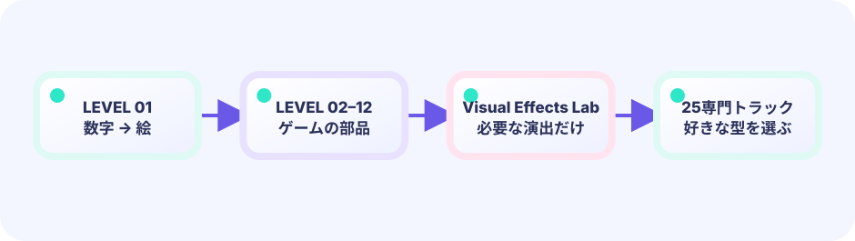

最初は、説明を読まずに遊んで大丈夫。
LEVEL 01を開き、光る丸を押してみます。インストールもコード入力もまだ必要ありません。
ブラウザで遊べる・ゲームづくりの教室
ここは、ミニゲームをまず遊び、その仕組みを一つずつ作ってみるサイトです。ブラウザで遊ぶだけなら準備はいりません。遊んだあとに、Go言語とゲーム用ライブラリ Ebitengine（エビテンジン） のコードを読んでいきます。

BASIC / 基礎編
LEVEL 01は丸を押すだけです。遊んだあとで、その動きを作る考え方を1〜2個ずつ覚えます。前のレベルで知ったことが、次のゲームの部品になります。
LEVEL 01を開き、光る丸を押してみます。インストールもコード入力もまだ必要ありません。
「押したら得点」「丸が別の場所へ動く」のように、さっき見た出来事へ順番に名前を付けます。
動きを決める処理と、画面に見せる処理を分けて読みます。自分で書きたくなった時に環境づくりへ進めます。
 このゲームを作る光る丸をタッチ
このゲームを作る光る丸をタッチ丸を押した場所を調べ、当たったら得点する最初のルールを学びます。
 このゲームを作るストップ・ザ・メーター
このゲームを作るストップ・ザ・メーター動くバーを狙った場所で止め、時間の進み方とゲームの状態を学びます。
 このゲームを作る落ちものキャッチ
このゲームを作る落ちものキャッチ海老・天次郎のカゴで星を集め、矩形の当たり判定を作ります。
 このゲームを作るEbi Flight
このゲームを作るEbi Flight海老・天次郎のジャンプから、速度と加速度の曲線を作ります。
 このゲームを作るPong
このゲームを作るPongボールの進む方向を、壁やパドルで反転させます。
 このゲームを作るBreakout
このゲームを作るBreakoutたくさんのブロックを配列で管理し、壊していきます。
 このゲームを作るSnake
このゲームを作るSnakeマス目の世界で、位置の履歴を体として残します。
 このゲームを作るSpace Shooter
このゲームを作るSpace Shooter自機、敵、弾を役割ごとに分けて管理します。
 このゲームを作るSokoban
このゲームを作るSokoban数値で書かれたステージと、箱を押すルールを扱います。
 このゲームを作るPlatformer
このゲームを作るPlatformer地面や壁へのめり込みを直し、世界をスクロールします。
 このゲームを作るTop-down Dungeon
このゲームを作るTop-down Dungeon敵の考え方を状態に分け、プレイヤーを追わせます。
 このゲームを作るBullet Hell Boss
このゲームを作るBullet Hell Boss角度から弾幕を作り、大量の物体を効率よく動かします。
CURRICULUM MAP / 学びの地図
最初は丸を押すだけ。次のレベルでは時間、当たり判定、動きへ進み、最後に作りたいジャンルを選びます。

SPECIAL GUIDE / UNIT TESTING
LEVEL 01〜12のUpdate全文を読み、Ebitengine非依存の純粋ルールへ分離し、完全なGoテストを書く網羅コースです。
VISUAL EFFECTS / 表現編
前半で描画道具を触り、後半はLEVEL 01〜12を使ってアニメーション状態の設計を学びます。派手さだけでなく、GPUなしでテストでき、ゲームルールを壊さず拡張できるコードが25のゲーム制作編への入口です。
DRAWING BASICS / 描画の基本
置く、回す、染める、透かす、光らせる。気になるパネルから触って大丈夫です。
 この絵を作るスタンプと移動
この絵を作るスタンプと移動1枚の絵を、好きな場所にスタンプします。描画の出発点です。
 この絵を作る回転と拡大縮小、そして中心
この絵を作る回転と拡大縮小、そして中心回転と拡大縮小。そして「どこを軸に回すか」の順番。
 この絵を作る色を変える・色を抜く
この絵を作る色を変える・色を抜く同じ絵を赤く染めたり、白く光らせたり、影に落としたり。
 この絵を作る透明と重ね順・残像
この絵を作る透明と重ね順・残像半透明と重ね順。薄いコピーを並べて残像を作ります。
 この絵を作る加算合成で光らせる
この絵を作る加算合成で光らせる光は足し算。加算合成で、重なるほど白く輝きます。
 この絵を作るパラパラ歩き（コマ送り）
この絵を作るパラパラ歩き（コマ送り）スプライトシートから1コマずつ切り出し、歩かせます。
 この絵を作る粒をばらまく（パーティクル）
この絵を作る粒をばらまく（パーティクル）小さな粒をたくさん。生まれて、動いて、消えていきます。
 この絵を作る炎・水・雷を合成する
この絵を作る炎・水・雷を合成する総まとめ。炎・水・雷を、これまでの文法だけで作ります。
 この絵を作るかっこいい炎魔法を作ろう
この絵を作るかっこいい炎魔法を作ろう長押しで溜めて放つ。炎スプライト・火の粉・熱リング・画面フラッシュ。
 この絵を作るかっこいい氷魔法を作ろう
この絵を作るかっこいい氷魔法を作ろう結晶を集めてから割る。氷スプライト・霜・粉砕・ブルーム。
 この絵を作るかっこいい雷魔法を作ろう
この絵を作るかっこいい雷魔法を作ろうジグザグ線が枝分かれ。ボルトPNG・火花・白フラッシュ。
 この絵を作るかっこいい光魔法を作ろう
この絵を作るかっこいい光魔法を作ろう放射状の光線・ソフトブルーム・キラキラ粒。
 この絵を作るかっこいい闇魔法を作ろう
この絵を作るかっこいい闇魔法を作ろう螺旋の闇・紫の縁・中心への吸い込み。
 この絵を作るスクワッシュ＆ストレッチ
この絵を作るスクワッシュ＆ストレッチ1枚絵を潰して伸ばし、予備動作と着地の重さを作ります。
 この絵を作る多重描画で輪郭を作る
この絵を作る多重描画で輪郭を作る黒いずらしコピーを下へ敷き、輪郭と影を作ります。
 この絵を作る衝撃波リングと集中線
この絵を作る衝撃波リングと集中線広がる輪と集中線だけで、必殺技の衝撃を作ります。
 この絵を作る大きな薄いコピーで疑似ブルーム
この絵を作る大きな薄いコピーで疑似ブルーム大きく薄い光を重ね、本物のぼかしなしで発光を作ります。
GAME FX / ゲーム演出
同じ粒子分離を繰り返さず、イベント、補間、Pose、Snapshot、Timeline、Cue台本を重複なく実装します。
 この絵を作るタッチ結果を演出イベントにする
この絵を作るタッチ結果を演出イベントにするタッチ判定を TapResult にし、命中の潰れ・残像・衝撃波を安全に重ねる。
 この絵を作るタイミング判定を演出レシピへ写す
この絵を作るタイミング判定を演出レシピへ写すPerfect / OK / Missを型付きレシピへ変換し、停止・バナー・花火を一貫させる。
 この絵を作る捕まえた星をHUDまで飛ばす
この絵を作る捕まえた星をHUDまで飛ばす捕獲した星はルールから即削除し、ID付き表示代理だけをHUDへ飛ばす。
 この絵を作る飛行物理を読みやすい姿勢へ翻訳する
この絵を作る飛行物理を読みやすい姿勢へ翻訳する上昇・滑空・急降下・衝突の姿勢を速度から導き、物理へ逆流させない。
 この絵を作るボールの過去を安全な軌跡にする
この絵を作るボールの過去を安全な軌跡にするボール本体へ残像を足さず、表示層の固定長履歴で滑らかな軌跡を描く。
 この絵を作る壊れたブロックを破片へ引き継ぐ
この絵を作る壊れたブロックを破片へ引き継ぐブロックは即削除し、削除前の形と色をTombstoneへ写して破片にする。
 この絵を作るマス目の蛇を滑らかにつなぐ
この絵を作るマス目の蛇を滑らかにつなぐbodyのマス座標は整数のまま、前回位置との補間と隣接セルから滑らかな蛇を描く。
 この絵を作る大量の発射と爆発を予算内でさばく
この絵を作る大量の発射と爆発を予算内でさばくShot・Destroyed・Damagedを列へ積み、演出dispatcherが上限内で火花や反動を選ぶ。
 この絵を作る倉庫番の一手を滑らかに見せる
この絵を作る倉庫番の一手を滑らかに見せる歩行・押し・失敗をMovePlanで先読みし、盤面は即確定、絵だけマス間を移動する。
 この絵を作る走る・跳ぶ・着地する身体を作る
この絵を作る走る・跳ぶ・着地する身体を作る接地false→trueを一回のLandingにし、Idle/Run/Rise/Fall/Landを物理から選ぶ。
 この絵を作る一撃を時間の層に分解する
この絵を作る一撃を時間の層に分解するHPは即減らし、HitStop→Flash→Recoverを表示専用タイムラインで再生する。
 この絵を作る画面全体のボム演出を台本化する
この絵を作る画面全体のボム演出を台本化するボムで弾を即削除し、Freeze→Flash→Wave→Dissolve→Confettiを再生可能な台本にする。
SPECIALIZATIONS / ゲーム制作編
A01〜A12で学んだイベント、補間、姿勢、表示代理、リアクション、エフェクト台本はここから共通装備です。各コースではそれを教え直さず、ジャンル固有のルール、データ設計、テスト、遊びの調整へ進みます。
 完成ゲーム横スクロールアクションA
完成ゲーム横スクロールアクションAVFX設計をゲームへ統合
A10 エッジ駆動の姿勢機械・A04 物理から導く姿勢・A06 削除前スナップショットを既習として、横スクロールアクション固有のルールと壊れにくい演出を統合します。
8 STEPS → 完成ゲーム大量敵サバイバルB
完成ゲーム大量敵サバイバルBVFX設計をゲームへ統合
A08 イベント列と演出予算・A11 ヒットリアクション時間軸・A06 削除前スナップショットを既習として、大量敵サバイバル固有のルールと壊れにくい演出を統合します。
8 STEPS → 完成ゲーム放置クリッカーC
完成ゲーム放置クリッカーCVFX設計をゲームへ統合
A02 型付き演出レシピ・A03 表示代理の寿命・A12 決定的エフェクト台本を既習として、放置クリッカー固有のルールと壊れにくい演出を統合します。
7 STEPS → 完成ゲームコマンドRPGD
完成ゲームコマンドRPGDVFX設計をゲームへ統合
A11 ヒットリアクション時間軸・A02 型付き演出レシピ・A12 決定的エフェクト台本を既習として、コマンドRPG固有のルールと壊れにくい演出を統合します。
9 STEPS → 完成ゲーム2D格闘ゲームE
完成ゲーム2D格闘ゲームEVFX設計をゲームへ統合
A11 ヒットリアクション時間軸・A04 物理から導く姿勢・A05 上限つき描画履歴を既習として、2D格闘ゲーム固有のルールと壊れにくい演出を統合します。
9 STEPS → 完成ゲーム合体物理パズルF
完成ゲーム合体物理パズルFVFX設計をゲームへ統合
A01 不変の結果イベント・A06 削除前スナップショット・A08 イベント列と演出予算を既習として、合体物理パズル固有のルールと壊れにくい演出を統合します。
8 STEPS → 完成ゲームデッキ構築カードゲームG
完成ゲームデッキ構築カードゲームGVFX設計をゲームへ統合
A03 表示代理の寿命・A11 ヒットリアクション時間軸・A12 決定的エフェクト台本を既習として、デッキ構築カードゲーム固有のルールと壊れにくい演出を統合します。
9 STEPS → 完成ゲーム3マッチパズルH
完成ゲーム3マッチパズルHVFX設計をゲームへ統合
A09 Plan→Commit→Tween・A06 削除前スナップショット・A12 決定的エフェクト台本を既習として、3マッチパズル固有のルールと壊れにくい演出を統合します。
8 STEPS → 完成ゲーム落ちものブロックパズルI
完成ゲーム落ちものブロックパズルIVFX設計をゲームへ統合
A09 Plan→Commit→Tween・A06 削除前スナップショット・A12 決定的エフェクト台本を既習として、落ちものブロックパズル固有のルールと壊れにくい演出を統合します。
8 STEPS → 完成ゲームひっぱり反射アクションJ
完成ゲームひっぱり反射アクションJVFX設計をゲームへ統合
A05 上限つき描画履歴・A11 ヒットリアクション時間軸・A08 イベント列と演出予算を既習として、ひっぱり反射アクション固有のルールと壊れにくい演出を統合します。
8 STEPS → 完成ゲーム2DブロックサンドボックスK
完成ゲーム2DブロックサンドボックスKVFX設計をゲームへ統合
A06 削除前スナップショット・A08 イベント列と演出予算・A10 エッジ駆動の姿勢機械を既習として、2Dブロックサンドボックス固有のルールと壊れにくい演出を統合します。
9 STEPS → 完成ゲームモンスター収集RPGL
完成ゲームモンスター収集RPGLVFX設計をゲームへ統合
A02 型付き演出レシピ・A03 表示代理の寿命・A11 ヒットリアクション時間軸を既習として、モンスター収集RPG固有のルールと壊れにくい演出を統合します。
9 STEPS → 完成ゲーム落下ペア連鎖パズルM
完成ゲーム落下ペア連鎖パズルMVFX設計をゲームへ統合
A07 離散状態の補間・A06 削除前スナップショット・A12 決定的エフェクト台本を既習として、落下ペア連鎖パズル固有のルールと壊れにくい演出を統合します。
8 STEPS → 完成ゲーム迷路追跡ゲームN
完成ゲーム迷路追跡ゲームNVFX設計をゲームへ統合
A07 離散状態の補間・A10 エッジ駆動の姿勢機械・A11 ヒットリアクション時間軸を既習として、迷路追跡ゲーム固有のルールと壊れにくい演出を統合します。
8 STEPS → 完成ゲーム爆弾迷路アクションO
完成ゲーム爆弾迷路アクションOVFX設計をゲームへ統合
A12 決定的エフェクト台本・A06 削除前スナップショット・A08 イベント列と演出予算を既習として、爆弾迷路アクション固有のルールと壊れにくい演出を統合します。
8 STEPS → 完成ゲームリバーシU
完成ゲームリバーシUVFX設計をゲームへ統合
A07 離散状態の補間・A09 Plan→Commit→Tween・A02 型付き演出レシピを既習として、リバーシ固有のルールと壊れにくい演出を統合します。
5 STEPS → 完成ゲーム戦略SLGP
完成ゲーム戦略SLGPVFX設計をゲームへ統合
A09 Plan→Commit→Tween・A11 ヒットリアクション時間軸・A08 イベント列と演出予算を既習として、戦略SLG固有のルールと壊れにくい演出を統合します。
5 STEPS → 完成ゲームアクティブ戦闘RPGQ
完成ゲームアクティブ戦闘RPGQVFX設計をゲームへ統合
A08 イベント列と演出予算・A11 ヒットリアクション時間軸・A12 決定的エフェクト台本を既習として、アクティブ戦闘RPG固有のルールと壊れにくい演出を統合します。
6 STEPS → 完成ゲーム会話演出ゲームR
完成ゲーム会話演出ゲームRVFX設計をゲームへ統合
A12 決定的エフェクト台本・A04 物理から導く姿勢・A02 型付き演出レシピを既習として、会話演出ゲーム固有のルールと壊れにくい演出を統合します。
5 STEPS → 完成ゲームレーシングゲームS
完成ゲームレーシングゲームSVFX設計をゲームへ統合
A04 物理から導く姿勢・A05 上限つき描画履歴・A10 エッジ駆動の姿勢機械を既習として、レーシングゲーム固有のルールと壊れにくい演出を統合します。
5 STEPS → 完成ゲームメトロイドヴァニアT
完成ゲームメトロイドヴァニアTVFX設計をゲームへ統合
A10 エッジ駆動の姿勢機械・A11 ヒットリアクション時間軸・A06 削除前スナップショットを既習として、メトロイドヴァニア固有のルールと壊れにくい演出を統合します。
5 STEPS → 完成ゲームレイキャスト迷路FPSV
完成ゲームレイキャスト迷路FPSVVFX設計をゲームへ統合
A04 物理から導く姿勢・A05 上限つき描画履歴・A11 ヒットリアクション時間軸を既習として、レイキャスト迷路FPS固有のルールと壊れにくい演出を統合します。
6 STEPS → 完成ゲームリズムゲームW
完成ゲームリズムゲームWVFX設計をゲームへ統合
A02 型付き演出レシピ・A12 決定的エフェクト台本・A05 上限つき描画履歴を既習として、リズムゲーム固有のルールと壊れにくい演出を統合します。
7 STEPS → 完成ゲームタワーディフェンスX
完成ゲームタワーディフェンスXVFX設計をゲームへ統合
A08 イベント列と演出予算・A03 表示代理の寿命・A11 ヒットリアクション時間軸を既習として、タワーディフェンス固有のルールと壊れにくい演出を統合します。
8 STEPS → 完成ゲーム見下ろし型アクションアドベンチャーY
完成ゲーム見下ろし型アクションアドベンチャーYVFX設計をゲームへ統合
A10 エッジ駆動の姿勢機械・A11 ヒットリアクション時間軸・A12 決定的エフェクト台本を既習として、見下ろし型アクションアドベンチャー固有のルールと壊れにくい演出を統合します。
8 STEPS →各コースはゲームジャンルの学習を目的とし、既存作品の画像・音楽・キャラクター・シナリオは使いません。主人公はオリジナルの海老・天次郎（えび・てんじろう / Ebi Tenjiroh）です。
SPECIAL GUIDE / GAME ARCHITECTURE
マップ、会話、イベント、敵、画像、音。ある程度大きなゲームは、ルールを実行するコードと、作品の中身を表すデータを組み合わせて作ります。
FEEDBACK